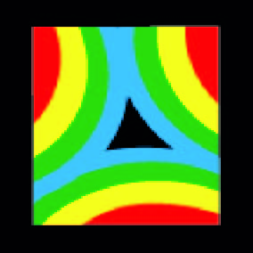

Reflection
My graphic and web design assignment has been in my eyes a huge success, not only have I gained new and improved software skills but also knowledge of design principles, such as but not limited to the CARP system which has changed not just my approach to design tasks, it has also given me a fresh new viewpoint of the multitude of designed objects that make up the world in which we live.
